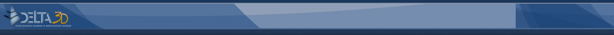

|  |
Overview
|
In this tutorial, you will learn the
basics of using the Director editing tool for creating scripts.
A Director script consists of actions that are triggered by an
event. Any number of actions can be performed in sequence, or in parallel,
from a single event by connecting them together into what are called chains.
All actions and events are visually represented as nodes that can be
placed and manipulated on a visual canvas. These nodes are then
chained together to perform a series of operations during gameplay.
|